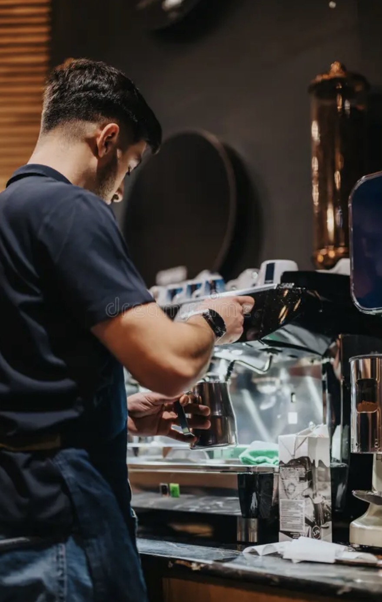

Our Story

From Mountain Mornings to Your Coffee Cup
Those who visit Colorado often spend their mornings hiking, climbing, and just exploring new places. That's why Mountain Bean Café is here to help start your day off right. It's heard to find a great coffee shop everywhere you go, that's why Mountain Bean Café is here to be your one stop coffee shop for all your caffeine needs.
We promise this, with each cup your day will be better. You will feel fully charged to take on whatever the day has to offer.